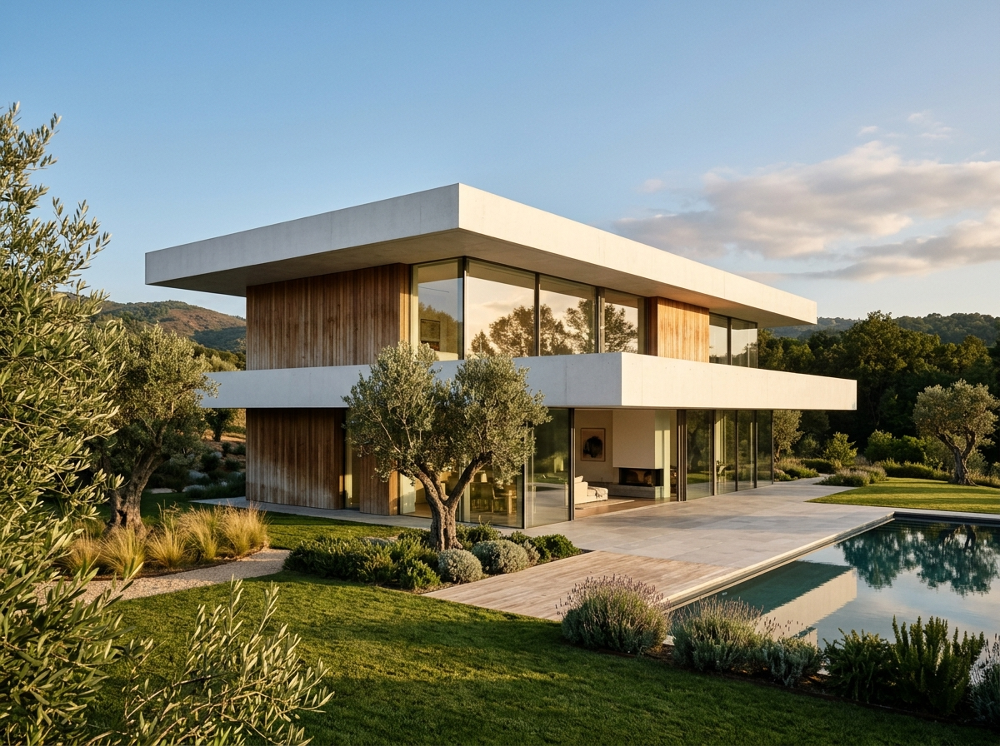
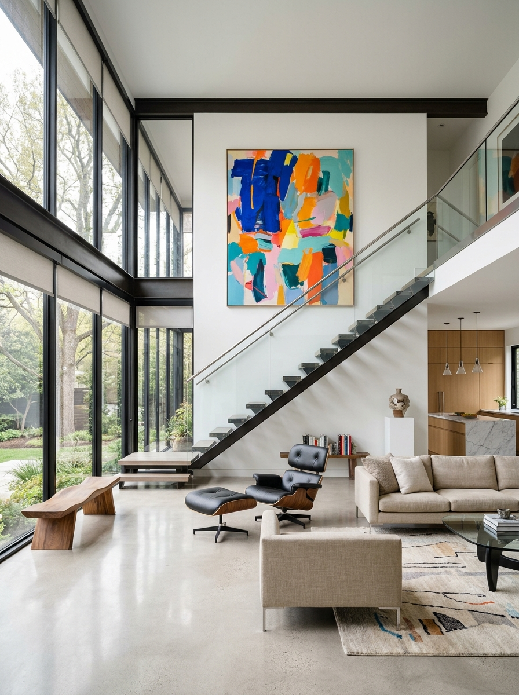
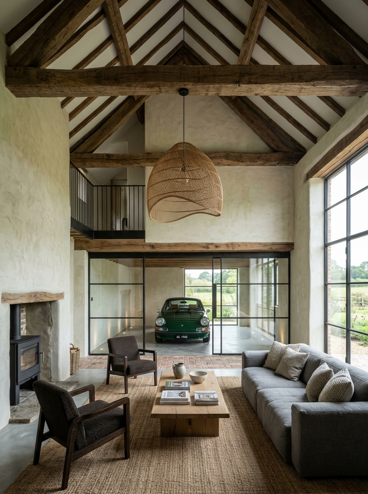
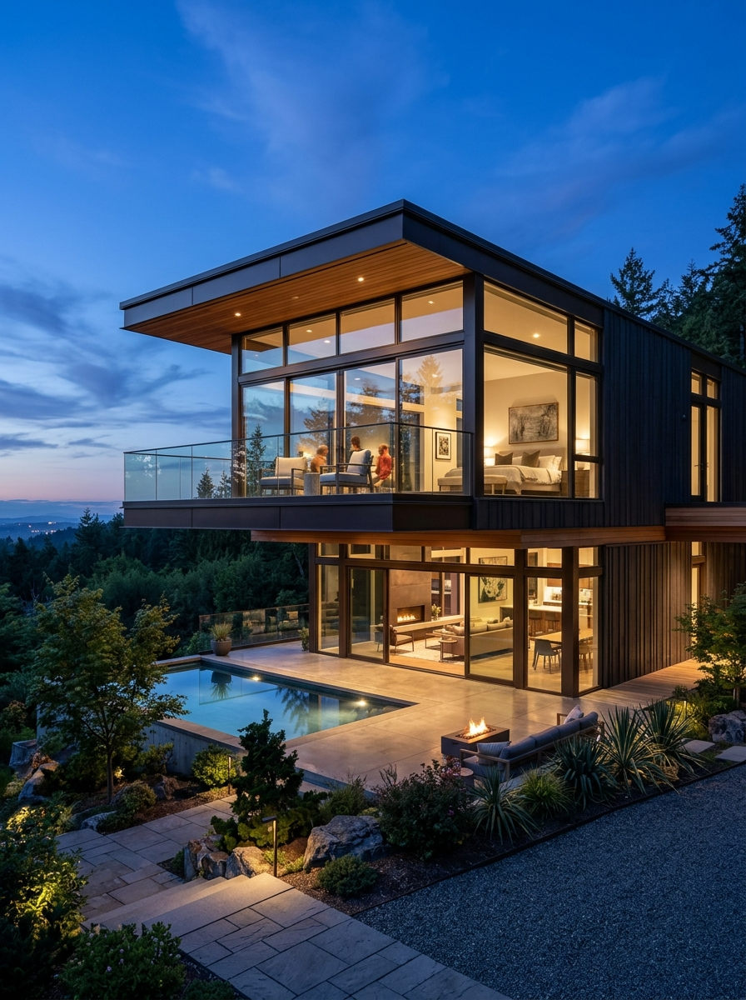

Mallorca, Spain · Architecture & Interior
680 m²
A curated curation of residential sanctuaries, cultural landmarks, and mindful commercial spaces shaped with proportion, shadow, and honest materiality.




